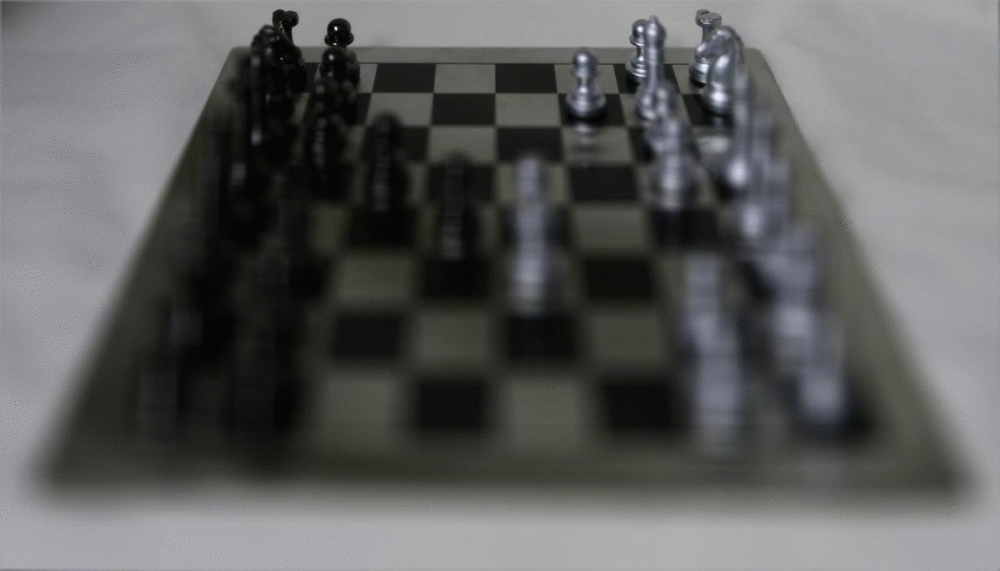
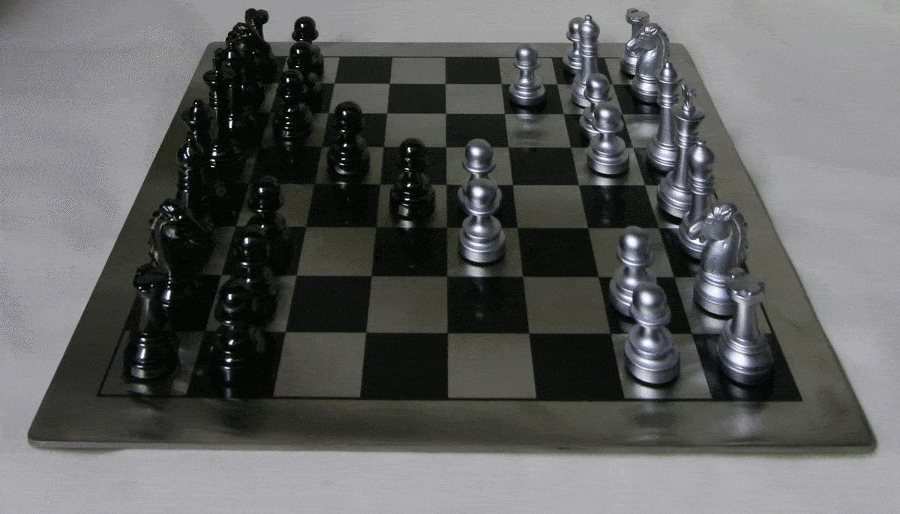
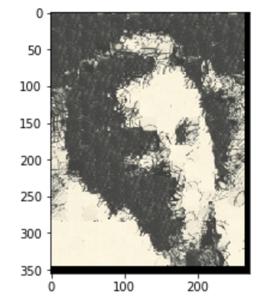
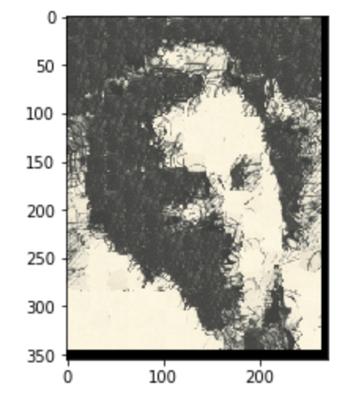

CS194 Final PROJECT - Alex Wu
Final Project One: Light Field Camera
Project Overview
By capturing images using multiple cameras from different angles over a plane, we are able to maniuplate the image and perform various cool visual effects. This project is based on the result of Stanford Light Field Archive, and we are aiming to perform deptch refocusing and aperture adjustment over on an array of photos.
Depth Refocusing
Depth refocusing is the concept of changing the depth of focus in an image so that we can choose which parts of the image will be focused on. If we take an average over all the images captured from the light field cameras, the focus will be on the far end of the image, since the cameras are focusing there. If we want to perform a refocus on the near end of the image, we can shift the images coming from the left cameras to the left and ones from the right cameras to the right. This way, after performing an average, the things on the near end of the image will be more aligned than the far end of the image.
When shifting the image, if we shift the image differently, the focus will be on different things. After some tests, my range of scale is from -0.5 to 3, where -0.5 will be focusing on the farthest end 3 on the nearest end. To generate the GIF, I've used a step of 0.5 to imcrement the scale. Here are some example images (scale=-0.5, 1.0, 2.5):
Here's the GIF showing the change of focus:
Aperture Adjustment
Aperture Adjustment is the concept of changing the aperture of an image so that the amount of things that will be in focus will change. If we take an average over all the images captured from the light field cameras, the focus will be on the far end of the image, which resembles a smaller aperture. If we want to perform a aperture adjustment, simply sum over images around the center will change the visual aperture size.
For summing over images around the center, my radius range is from 1 to 8, where 1 is a larger aperture that focus on the entire image, and 8 is simply the average over all the iamges. Here are some examples: (radius: 1, 4, 8)
Here's the GIF showing the change of aperture:
Extra Credit (Using Real Data)
For the extra credit, I have collected my own data by shooting an image of my keyboard from fifteen different angles, mimicing a 5 * 3 camera array. However, after I perform the refocus & aperture adjustment, the result is not as good as the previous ones.
Here are the results of refocusing: (scale 0.0, 1.0, 1.5)
Here are the results of aperture adjustment: (radius: 0, 1, 2)
The reason for the poor result is mainly due to my inability to translate the camera steadily through space. If I can use tripod to build a similar camera frame, the result would be much better.
Final Project Two: Image Quilting
Project Overview
Texture is very important in our daily life, and being able to transform the texture of an image onto another image can be very appealing. This project aims to be able to reconstruct some texture images using various methods and also perform texture transfer from one image to another.
Randomly Sampled Texture
One way to reconstruct a texture image is to simply randomly sampled patches from the image and then paste them together directly. Here is the result, as you can see there are really no blend between different patches, and the artifacts (edges) are very obvious.
Overlapping Patches
A simple way to "hide" all the artifacts is using overlaps. Instead of directly paste the patch in, we overlap one patch with another, and the straight edge artifact will not be that obvious. Additionally, we also calculate the score between each patch, and choose the one that has the least SSD score to overlap to the image. Here are the results. The first image is created by forcing the top left patch to be the top left patch in the original image, thus "forcing" the image to become a copy of the original brick wall image. The second image is a reconstructed texture using a random top left patch to start with. As you can see, the artifact is not that obvious at all. I have labelled one relatively obvious artifact in the red square. Overall, it is pretty decent already.
Seam Finding
Another improvement that we can make is to instead of using straight line to seperate between patches, we can use curve paths. This makes the patches fuse together more seeminglessly. To calculate the path, we use a dynamic programming algorithm that calculate the minimum path along a cost image for the overlapping region. Here are the results. The first group of images is a vertical mask on top of the cost image and the two overlapping region of the two patches. The second is a horizontal mask and cost image with two overlapping regions. This shows how the path is created.
Here are the results, as you can see, it is much better than the overlapping region ones. Also include several other textures found online as well (the last two).
Texture Transfer
With the texture reconstruct method, we are able to do texture transfer with ease. I simply added another cost term to calculate the cost between the current and the target image. It will "guide" the algorithm to find a better match. Here are some results:
 
